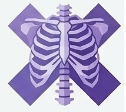
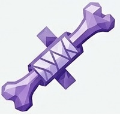

Sobre Nosotros
Historia: Fundada en 2020, HygiaFrontis nació con la misión de ofrecer atención médica integral y humana...
Misión: Brindar servicios de salud accesibles, con calidez y tecnología de vanguardia, promoviendo el bienestar de nuestra comunidad.
Valores: Empatía, excelencia, innovación y compromiso social.
Nuestros Servicios
Urgencias 24h
Atención inmediata las 24 horas, los 365 días del año.
Laboratorio Clínico
Análisis clínicos con equipos de última generación.

Rayos X
Estudios de imagenología con reporte inmediato.
Cardiología
Especialistas en prevención y tratamiento cardiovascular.
Pediatría
Atención integral para niños y adolescentes.

Traumatología
Diagnóstico y tratamiento de lesiones del sistema músculo-esquelético.